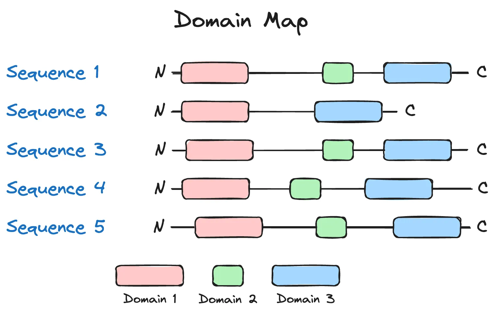

written by Eric J. Ma on 2024-05-12 | tags: crispr-cas protein language models genomic data machine learning bioinformatics sequence generation protein engineering gene editing dataset curation computational biology data science generative model generative artificial intelligence
In this blog post, I do a deep dive into a fascinating paper on designing CRISPR-Cas sequences using machine learning. The authors develop a generative model to produce novel protein sequences, validated in the lab, aiming to circumvent intellectual property restrictions. They curate a vast dataset, the CRISPR-Cas Atlas, and employ various models and filters to ensure sequence viability. My review highlights the methodology, emphasizing the importance of filtering and the challenges of using 'magic numbers' without justification. How many sequences are enough to train a generative model, and what makes laboratory experiments faster? Curious to find out more?
I recently caught wind of a new paper designing CRISPR-Cas sequences. Upon reading it, I thought it was very interesting for multiple reasons. Within this paper, the authors fine-tune protein language models and use those models to generate new protein sequences, which they were then able to validate within the lab. Overall, I thought the paper was well-written, though rough in some places. Here's my review, with a focus on the ML-in-bio methodology.
As mentioned in the paper, the author's goal is to develop a generative model of CRISPR-Cas sequences that they could then screen in the lab for activity. Within the industry, one motivation for doing this is to discover novel sequences for intellectual property (IP) reasons to circumvent IP restrictions imposed by patents.
To train this generative model, there were multiple datasets curated, each of them biologically motivated.
To start, the authors curated "26.2 terra-bases worth of assembled microbial genomes and metagenomes". I can guess as to why assembled genomes and metagenomes are important -- if genomes are sequenced using short read sequencing, then those reads (~100 base pairs in length) are often not enough to cover the size of CRISPR-Cas9 complexes (which are in the ~1,000s-10,000s of base pairs). Metagenomes are also important; CRISPR-Cas9 complexes may reside within microbes that are not culturable (i.e. we can't grow them in a lab), and metagenome sequencing enables us to know what may be present within a microbial community without needing to go through the laborious process of figuring out how to culture the microbe(s) in that community.
As described in the paper, the dataset also "spans diverse phyla and biomes." From a genome mining perspective, this is important because it expands the universe of potentially undiscovered proteins, and from a protein generation perspective, it gives us a more diverse base of proteins upon which to generate novel, undiscovered sequences.
In total, based on the author's description of the dataset, this constituted:
This became a new resource called the CRISPR-Cas Atlas. No details were provided in the paper on how to access the compiled data, so I think the authors are not planning to release it, especially given this quote:
All data used to create the CRISPR-Cas Atlas are available in their original form via the IMG/M, ENA, and NCBI databases.
This also gives us, the readers, a hint that the real secret sauce of the model isn't the model itself but the training data. This mirrors the broad sentiment within the deep learning world that fancier models won't do the trick, but getting creative with datasets will.
One of the claimed upsides of this dataset is that it represented an increase in diversity for Cas families of proteins, as measured by the number of protein clusters at 70% identity, compared to what's available on Uniprot. While this is a great metric to understand how newly diverse the dataset is, I also wonder how the cluster identity threshold value was chosen for reporting; though shared, it isn't explained. (This is a theme throughout the paper, and I think it's worth highlighting that pure ML papers also fall into the same trap.)
The authors train a series of models here. The first model is trained by fine-tuning the ProGen2 protein language model on the CRISPR-Cas Atlas. ProGen2 is a transformer decoder model that autoregressively decodes protein sequences. During fine-tuning, the authors mention that the training set composition enabled "balancing for protein family representation and sequence cluster size" but do not appear to refer to any methods section details on how this was done, making it difficult to ascertain how this was accomplished for the reader.
Setting this opaque detail aside, the authors used the model to generate 4M protein sequences. 2M were generated "directly from the model", and what this means is that the authors provided the <BOS> (beginning of sequence, or equivalent) token and let the model free to autoregressively generate 2M sequences. Another 2M were prompted "with up to 50 residues from the N- or C-terminus of a natural protein to guide generation towards a particular family". This point intrigued me; it's easy to see how one can do autoregressive decoding from the N-terminus since, by convention, the N-terminus is at the beginning of the sequence. Still, I struggled to understand how one can decode autoregressively from the C-terminus until I saw in the paper that sequences "were provided to the model in forward (N-to-C) and reverse (C-to-N) directions," the latter, therefore, allowing for autoregressive decoding while providing the tail of the sequence. However, if one used an encoder-style model (e.g. AbLang), we could get away with feeding in sequences in the N-to-C direction.
According to the methods section, the model was trained relatively shortly -- 5 epochs, with the learning rate increased linearly over 70k warmup steps from an unknown value to $5 \times 10^{-5}$, and then decayed at an unknown rate "according to an inverse-square-root schedule". Ultimately, the model with the lowest validation set loss was chosen. No model ensembling was done here, and that is a reasonable choice. (I do wish the authors were more explicit about details here as well.)
Now, as a machine learner, one thing I'm starting to warm up to is this idea that the sequence generator model isn't particularly interesting in the absence of the sequence viability filters that are applied to the generated sequences post-hoc. According to the methods here, we see the following filters.
Firstly, sequences containing non-canonical or unknown amino acids were discarded. However, this begs the question -- why not mask output probabilities and re-normalize them to achieve the same effect? And why were there non-canonical or unknown amino acids present in the training set if this was going to be a filter anyway? In any case, this filter is an obvious one because, for experimental validation, it is much easier to build a protein that uses only the 20 standard amino acids. That said, this filter can be ameliorated (or even eliminated) if one were to train a model with the right tokenizer (one that ignores non-standard amino acids) or apply masking instead.
Secondly, "degenerate sequences were filtered according to k-mer repetition, such that no amino acid motif of 6/4/3/2 residues was repeated 2/3/6/8 times consecutively, respectively". To illustrate this more clearly, the authors did not want to see a 6-mer amino acid motif repeated 2 times or a 4-mer amino acid motif repeated 3 times. Of note is the following sentence in the methods section:
These criteria were satisfied by over 99.5% of natural proteins from the CIRSPR-Cas Atlas yet removed dominant failure modes among generated sequences.
The authors are unclear here: What are these so-called "dominant failure modes"? The paper does not describe this well. Additionally, the motif and repeat lengths appear to be magic numbers that have no justification, so it's unclear how the authors came up with these criteria; while I can intuit why these might be problematic, I'd much prefer to see the authors' justification instead.
Thirdly, the authors filter sequences "according to coverage within CRISPR-Cas families." This is likely with the goal of ensuring evolutionary plausibility, which is a great biological prior to impose on generated sequences. Another magic number shows up here:
Using BLAST, all generated sequences were aligned against 90% identity cluster representatives from the CRISPR-Cas Atlas. Sequences were retained if the top-scoring alignment (excluding exact matches) had greater than 80% query and target coverage, as well as a BLAST score greater than 50.
More unjustified magic numbers are in there, though this set of numbers appears to be more understandable. 90% identity to cluster representatives ensures that we retain some diversity in sampled sequences, while alignment coverage of >80% and a BLAST score >50 help ensure that we have sequences that could have been evolutionarily plausible based on common descent. There may be other ways to accomplish the same goal, though, but I would wager that these are simple heuristics that go a long way.
Finally, a similar filter was applied with profile HMMs (using the HMMER program), with analogous criteria (coverage >80% on both query and target sequences and score >50).
So to summarize, here are the filters applied to the generated sequences:
These criteria are not specific to CRISPR-Cas systems and can be used for other applications. As mentioned above, a generative model of protein sequences, even if made domain-specific, is insufficient on its own; we need prior biological knowledge of known patterns (and anti-patterns) to inform the filtering and prioritization of generated sequences. The point of computational filters also reminds me of the paper, Computational Scoring and Experimental Evaluation of Enzymes Generated by Neural Networks, in which the authors describe COMPSS, a suite of metrics for selecting protein sequences from a pool of generated ones.
The first model sets a lot of the patterns used in the paper:
Once we understand and follow the framework, it becomes easier to follow the rest of the paper. Let's dive into the rest of it.
There are many families of Cas, and Cas9 is one of them. This protein family is interesting because it is one of the most widely used in gene editing applications. It makes sense to generate novel Cas9s; when using the pan-CRISPR-Cas model, it's possible to steer the model to generate Cas9-like proteins by prompting with the first 50 amino acids at either the N- or C-terminus. Still, according to the authors, this resulted in only just a bit more than 1/4 of the sequences passing the sequence viability filters described above. As such, the authors chose to train a Cas9-specific model fine-tuned on approximately 1/4 million Cas9 sequences from the CRISPR-Cas Atlas, which gave them an approximately 50% sequence viability rate (just a bit higher).
As per the pattern of the paper, the generated Cas9-like sequences were characterized computationally first. The assessment involved the following:
Of the four assessments described above, the last one contains a lot of magic sauce, and it's worth going through. Homology often indicates similar functions, and for the generated sequences, being homologous in domain structure is a strong signal of similarity in functional space. Though not shown in the main figures of the paper, I can imagine making a map of sequences that looks like the following:

If we assume that each of the sequences above was generated from a language model, and the three coloured domains were present in a naturally occurring and functional variant of the protein, then we may deduce that of the five sequences generated above, only sequence 2, which has a missing domain, may be non-functional. (There are more nuanced situations, though, such domains being unnecessary for function.) Overall, as a sanity-check on generated sequences, I generally like this idea, as a ton of prior biological knowledge is encoded in such a check. Indeed, for the generated Cas9 sequences, there was a high rate of generating synthetic Cas9s with the following domains:
However, the downside is that such a check is likely to be specific to a protein family and can't be treated as an automated sanity check.
I will also note that though I glossed over the magic numbers listed in this section of the paper while writing this overview, I still would have liked to see those numbers justified or subject to sensitivity analyses.
CrRNA (CRISPR RNA) and tracrRNA (trans-activating CRISPR RNA) are essential molecules within gene editing systems. While I'm not a gene editing expert, if I am not mistaken, crRNA and tracrRNA together form the complex that guides Cas9 to the target site for DNA cleavage, and in engineered gene editing systems, they get fused directly to form a single guide RNA (sgRNA).
In designing crRNA and tracrRNA, the authors treated this as a sequence-to-sequence (seq2seq) modelling problem. Within seq2seq problems, the left seq is used to generate the right seq, and the framework used here is to use the protein sequence (left seq) to generate the nucleotide crRNA + tracrRNA combined sequence (right seq). Here, the authors identified 112,212 Type II effector proteins, the broader family of Cas9 proteins, for which they could also confidently identify the crRNA and tracrRNA sequences. I would guess that the broadened family was necessary to capture diversity.
The way that the authors characterized the sequences was as follows:
Visual clustering is a valuable tool, though I would have wanted the authors to check that they were not being Fooled by the Projection(tm) (a nod to both cartography and Nassim Nicholas Taleb's "Fooled by Randomness") by checking that their visual clustering still holds with at least two more methods, such as UMAP and/or multi-dimensional scaling (MDS). The authors used the term "validate" to describe this. Still, I think the term should be reserved solely for experimental validation and the visual clustering step should be described as a "sanity check" instead.
Here are my overall thoughts on the paper, having read it.
Having read the paper and having been involved in multiple protein engineering campaigns, small molecule design projects, and mRNA design efforts, the part that has been the most challenging in AI-based library design isn't the generative model but rather knowing which outputs of the generative model to trust. Once one has a generative model, sequences and molecules become a commodity; the hard part is encoding expert knowledge into filters and rankers that can prioritize sequences to test in a lab. Different forms of generative models vary in terms of their efficiency of generation, with evolutionarily-informed generators (like the ones described here) being more likely than pure random sequence generators to generate evolutionarily plausible (and hence plausibly functional) proteins. Still, the real value lies in whether we've shortcut experimentation through the library design, and my priors here are that in the presence of evolutionarily-informed sequence generators, the presence of biologically informed (or even better, subject matter expert-informed) prioritization and filtering will be what makes laboratory experiments faster.
Many, many, many numbers were shared but not explained. If they were pulled out of the posterior of one's intuition, that intuition should be documented. If not, there should be a sensitivity analysis of certain parameters, such as 70%, 80%, or 90% similarity thresholds, to see whether conclusions change based on those values.
I've been asked, "How many sequences do you need to train a generative model?" While I know from posterior intuition that dozens are probably not enough, I've wondered whether we could do a Darn Fine Job(tm) with just thousands of sequences from a single protein family. Indeed, when it came to my unpublished work doing an influenza sequence forecaster using variational autoencoders in 2017, I worked with a small handful (14455) of influenza HA sequences. Here, the authors were using only a few hundred thousand sequences too. I think the protein language model world has already had its "generalist model" moment w.r.t. architectures; just like with GenAI experiencing a Cambrian explosion of domain-specific and/or local models, protein language models are going to be generated or fine-tuned on a per-application basis.
@article{
ericmjl-2024-paper-review-design-of-highly-functional-genome-editors-by-modeling-the-universe-of-crispr-cas-sequences,
author = {Eric J. Ma},
title = {Paper Review: Design of highly functional genome editors by modeling the universe of CRISPR-Cas sequences},
year = {2024},
month = {05},
day = {12},
howpublished = {\url{https://ericmjl.github.io}},
journal = {Eric J. Ma's Blog},
url = {https://ericmjl.github.io/blog/2024/5/12/paper-review-design-of-highly-functional-genome-editors-by-modeling-the-universe-of-crispr-cas-sequences},
}
I send out a newsletter with tips and tools for data scientists. Come check it out at Substack.
If you would like to sponsor the coffee that goes into making my posts, please consider GitHub Sponsors!
Finally, I do free 30-minute GenAI strategy calls for teams that are looking to leverage GenAI for maximum impact. Consider booking a call on Calendly if you're interested!